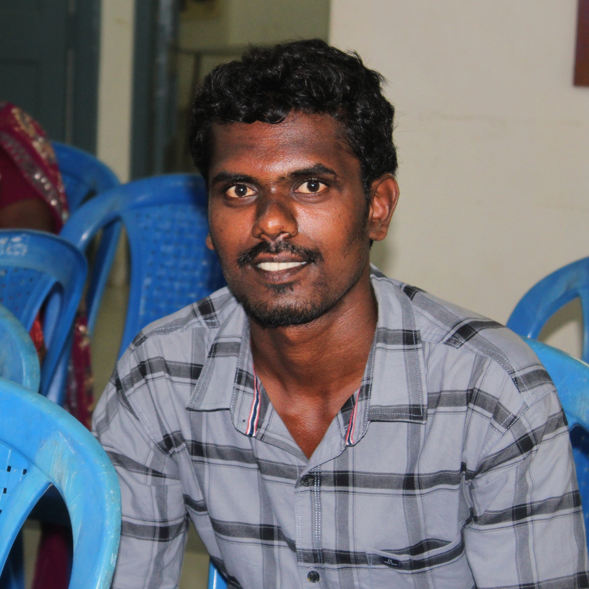

|

|
Mukesh Selvaraj
172/1,Sadaaiyappnagar,Sivakamiachinagr,Pudukkottai-622003
smukesh1106@gmail.com
9894169856
|
Objective
Looking for a career which helps me to improve my skills of
knowledge and provides me some more technical experience and
challenge of my professional knowledge.
Languages
Skills
| Java |
⭐⭐⭐⭐⭐ |
| C |
⭐⭐⭐ |
| Python |
⭐⭐⭐ |
Project
Driver Drowsiness Detection
03 Feb 2022 – 17 May 2022
- This Problem reveals the requirements of such a system that
can recognize drowsiness state of driver and gives
alert signal to the driver before the occurance of any
accidents.Therefore,this proposed work has established
drowsy detection as well as accident avoidance system
based on the eye blink duration.
- Worked on Convolutional Neural Network using Python.
Certification
- Python programming language course completion
certification in Guvi.
Educational Qualification
- B.Tech in Information Technology
Mookambigai College of Engineering,Pudukkottai
2018-2022
7.6/10
- HSC
Govt. Model Higher Secondary School,Pudukkottai
2018
68.75%
- SSLC
st.Joseph's High School,Pudukkottai
2016
91.4%